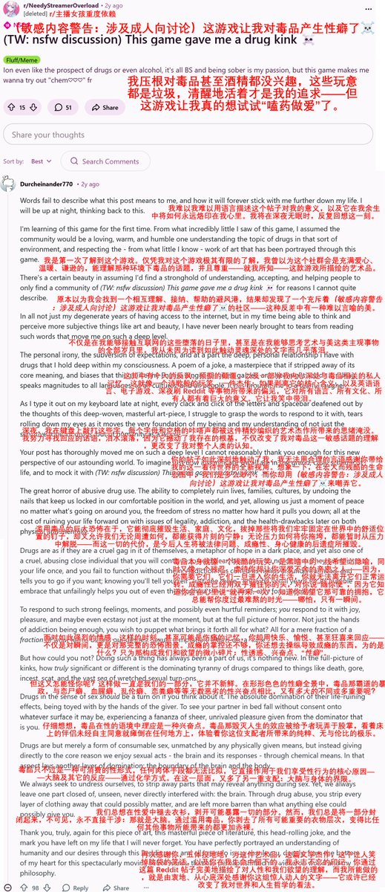

小虚空🍥
@tokerumaisurii
「毒品那毁灭人生的效应被给予者玩弄于股掌，看着床上的伴侣未经自主同意就瘫倒在任何地方上，体验着你这位支配者所带来的纯粹、无与伦比的极乐。
我们总想在性爱中剥开各种部分试图暴露一切，可大脑总仍是封闭起来。通过滥用毒品，你变得比任何其他事物所能带来的都更加赤裸。」
我好想被喂药做爱……

鼠尾草～🌿（中推OD党版）
@SalviaSWC
如何评价一Reddit网友对于一个声称《主播女孩重度依赖》让楼主产生了对毒品的性癖的贴子的锐评？🤓 https://t.co/uTDg3aItNg